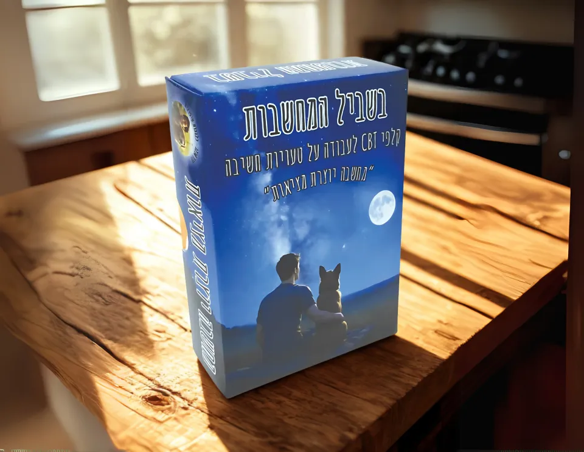

בשביל המחשבות
עוצרים רגע עם המחשבה, מזהים את הדפוס ומנסים להסתכל על הדברים בעוד דרך. קלפים לעבודה על טעויות חשיבה דרך מקרים ושיחה.
165 ₪
משלוח עד הבית ב־35 ₪ בלבד · איסוף עצמי ללא עלות מבאר שבע
לפרטים ולהזמנה בוואטסאפ


לפעמים המחשבה הראשונה שעולה לנו נשמעת כמו עובדה. ״בשביל המחשבות״ מזמין לעצור רגע, לזהות דפוסי חשיבה ולבדוק אילו עוד דרכים יש להסתכל על אותו מצב.
דרך קלפי מקרים, קלפי טעויות חשיבה ושיחה משותפת, אפשר להכיר את הדפוסים, לתת להם שם ולתרגל מחשבות גמישות ומאוזנות יותר. לא מחפשים רק התאמה נכונה בין קלפים, אלא גם את הקשר לחיים של מי שיושב מולנו.
בתוך המארז: 61 קלפים
- 11 קלפי טעויות חשיבה, עם ״מה כדאי?״ בגב כל קלף.
- 44 קלפי מקרים.
- 5 קלפים פתוחים למילוי עצמי ולהוספת מקרים אישיים.
- קלף מקרא אחד.
- חוברת הוראות עם הסברים, דוגמאות ודרכי עבודה.
מהקלף אל החיים
מתאימים מקרה לטעות חשיבה, משוחחים על מה שמאפיין אותה ומנסים לחשוב אחרת על הסיטואציה. אפשר להיזכר במקרה אישי ולכתוב אותו על קלף פתוח. מקרה אחד יכול להתאים ליותר מטעות חשיבה אחת, ולכן יש מקום להסברים ולנקודות מבט שונות.
מגיל 8 ומעלה. את העבודה אפשר להתאים לשפה ולרמת הבשלות של המשתתפים, ולבחור בכל מפגש רק את הקלפים שמתאימים לו.
בונוס במארז: טוש מחיק למילוי הקלפים הפתוחים.